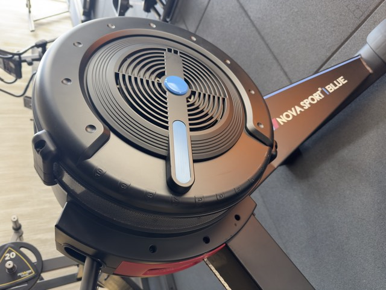
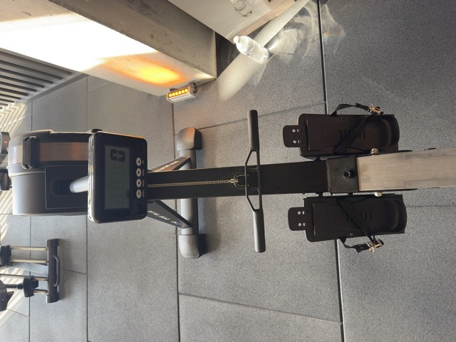

"Interval" = kısa süre hızlı, kısa süre yavaş, tekrar. Kürek makinesi düz taban için ideal: ayağa hiç darbe yok, tüm vücut çalışıyor. Sayacı başlat; her geçişte telefon bipler ve ekran yanıp söner.
Başlamadan önce Sesi dene'ye bas: müziğin üstünden bip duyuyor musun? Duymuyorsan telefonun yan sessiz anahtarını aç. Aşağı kaydırınca sayaç ekranın altında küçük halde kalır.

Volanın yanındaki mavi sürgü, 1–10 arası. Bu zorluk ayarı değil, vitestir: yüksek sayı her çekişi daha ağır ve yavaş hissettirir (bisiklette ağır vites gibi), ama seni daha çok yormaz — daha çok yoran, bacakla daha sert itmendir. Yüksek damper belden fazla yük ister.

Bu monitör basit: süre, kürek sayısı, kalori. 500 m temposu göstermiyor; o yüzden ölçün dakikadaki çekiş sayısı ve nefesin. Başta RESET'e bas, MODE ile kürek sayısına getir, antrenman sonunda sayıyı aşağıya kaydet.
30 dakikada beklenen toplam: Faz 1'de 600–650 çekiş. 550 ve altı = hızlı turlar yeterince hızlı değil; 700 üstü = yavaş turlar gerçekten yavaş değil.
Sıra: bacak → gövde → kol, dönüşte kol → gövde → bacak. Gücün %60'ı bacaktan gelir. Kollarla çekiyorsan yanlış yapıyorsun.
Antrenman bitince monitördeki toplam kürek sayısını ve kullandığın damperi gir. Haftadan haftaya sayının artması = daha sert çekiyorsun.
| Tarih | Faz | Kürek | Damper | Çekiş/dk |
|---|
Baş dönmesi veya göğüs sıkışması olursa dur. İlk 2 hafta "hızlı" turları %80 güçle yap, tam gaz değil.